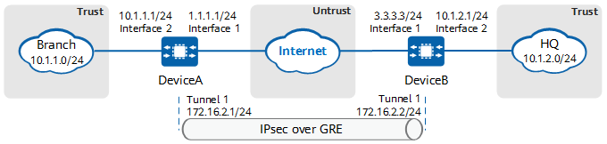

Example for Configuring an IPsec over GRE Tunnel
Networking Requirements
In Figure 1, the branch and headquarters (HQ) are connected to the Internet through DeviceA and DeviceB, respectively. There are reachable routes between DeviceA and DeviceB. The two devices communicate with each other through a GRE tunnel, and IPsec protection is required for the GRE tunnel to implement secure transmission of data flows in the tunnel.

In this example, interface 1 and interface 2 represent 10GE 0/0/1 and 10GE 0/0/2 respectively.

Item |
Data |
|---|---|
DeviceA |
Interface: 10GE 0/0/1 IP address: 1.1.1.1/24 |
Interface: 10GE 0/0/2 IP address: 10.1.1.1/24 |
|
GRE configuration Interface: Tunnel 1 IP address: 172.16.2.1/24 Source address: 1.1.1.1/24 Destination address: 3.3.3.3/24 Tunnel identification keyword: 1024256 |
|
IPsec configuration Remote address: 172.16.2.2 Authentication mode: PSK authentication Pre-shared key: YsHsjx_202206 Local ID type: IP address Remote ID type: any remote ID |
|
DeviceB |
Interface: 10GE 0/0/1 IP address: 3.3.3.3/24 |
Interface: 10GE 0/0/2 IP address: 10.1.2.1/24 |
|
GRE configuration Interface: Tunnel 1 IP address: 172.16.2.2/24 Source address: 3.3.3.3/24 Destination address: 1.1.1.1/24 Tunnel identification keyword: 1024256 |
|
IPsec configuration Remote address: 172.16.2.1 Authentication mode: PSK authentication Pre-shared key: YsHsjx_202206 Local ID type: IP address Remote ID type: any remote ID |
Configuration Roadmap
This example uses default security algorithms of IPsec.
For security purposes, you are advised not to use the weak security algorithm or weak security protocol of this feature. If you must use such a weak security algorithm or protocol, run the install feature-software WEAKEA command to install the weak security algorithm or protocol feature package WEAKEA.
- Create a tunnel interface on both DeviceA and DeviceB to establish a GRE tunnel.
- Configure an IPsec policy on DeviceA and DeviceB and apply the policy to both GRE tunnel interfaces.
Procedure
- Configure public and private network interfaces on DeviceA.
# Configure the public network interface 10GE 0/0/1.
<HUAWEI> system-view [HUAWEI] sysname DeviceA [DeviceA] interface 10ge 0/0/1 [DeviceA-10GE0/0/1] undo portswitch [DeviceA-10GE0/0/1] ip address 1.1.1.1 24 [DeviceA-10GE0/0/1] quit
# Configure the private network interface 10GE 0/0/2.
[DeviceA] interface 10ge 0/0/2 [DeviceA-10GE0/0/2] undo portswitch [DeviceA-10GE0/0/2] ip address 10.1.1.1 24 [DeviceA-10GE0/0/2] quit
# Configure the tunnel interface Tunnel 1.
[DeviceA] interface Tunnel 1 [DeviceA-Tunnel1] ip address 172.16.2.1 24 [DeviceA-Tunnel1] quit
- Configure a GRE tunnel interface on DeviceA.
[DeviceA] interface Tunnel 1 [DeviceA-Tunnel1] tunnel-protocol gre [DeviceA-Tunnel1] source 10ge 0/0/1 [DeviceA-Tunnel1] destination 3.3.3.3 [DeviceA-Tunnel1] gre key cipher 1024256 [DeviceA-Tunnel1] keepalive [DeviceA-Tunnel1] quit
- Configure an ISAKMP IPsec policy on DeviceA.
- Configure an IPsec policy.
[DeviceA] ipsec policy map1 10 isakmp [DeviceA-ipsec-policy-isakmp-map1-10] security acl 3000 [DeviceA-ipsec-policy-isakmp-map1-10] proposal tran1 [DeviceA-ipsec-policy-isakmp-map1-10] ike-peer b [DeviceA-ipsec-policy-isakmp-map1-10] sa trigger-mode auto [DeviceA-ipsec-policy-isakmp-map1-10] quit
By default, the negotiation for IPsec tunnel establishment is triggered by traffic. To enable automatic negotiation for IPsec tunnel establishment, run the sa trigger-mode auto command.
- Configure an IPsec policy.
- Configure routes on DeviceA to divert traffic destined for the HQ intranet to the GRE tunnel.
Assume that the next-hop IP address of the route from DeviceA to the Internet is 1.1.1.254.
[DeviceA] ip route-static 0.0.0.0 0 1.1.1.254 [DeviceA] ip route-static 10.1.2.0 24 Tunnel1
- Configure public and private network interfaces on DeviceB.
# Configure the public network interface 10GE 0/0/1.
<HUAWEI> system-view [HUAWEI] sysname DeviceB [DeviceB] interface 10ge 0/0/1 [DeviceB-10GE0/0/1] undo portswitch [DeviceB-10GE0/0/1] ip address 3.3.3.3 24 [DeviceB-10GE0/0/1] quit
# Configure the private network interface 10GE 0/0/2.
[DeviceB] interface 10ge 0/0/2 [DeviceB-10GE0/0/2] undo portswitch [DeviceB-10GE0/0/2] ip address 10.1.2.1 24 [DeviceB-10GE0/0/2] quit
# Configure the tunnel interface Tunnel 1.
[DeviceB] interface Tunnel 1 [DeviceB-Tunnel1] ip address 172.16.2.2 24 [DeviceB-Tunnel1] quit
- Configure a GRE tunnel interface on DeviceB.
[DeviceB] interface Tunnel 1 [DeviceB-Tunnel1] tunnel-protocol gre [DeviceB-Tunnel1] source 10ge 0/0/1 [DeviceB-Tunnel1] destination 1.1.1.1 [DeviceB-Tunnel1] gre key cipher 1024256 [DeviceB-Tunnel1] keepalive [DeviceB-Tunnel1] quit
- Configure an ISAKMP IPsec policy on DeviceB.
- Configure an IPsec policy.
[DeviceB] ipsec policy map1 10 isakmp [DeviceB-ipsec-policy-isakmp-map1-10] security acl 3000 [DeviceB-ipsec-policy-isakmp-map1-10] proposal tran1 [DeviceB-ipsec-policy-isakmp-map1-10] ike-peer a [DeviceB-ipsec-policy-isakmp-map1-10] sa trigger-mode auto [DeviceB-ipsec-policy-isakmp-map1-10] quit
By default, the negotiation for IPsec tunnel establishment is triggered by traffic. To enable automatic negotiation for IPsec tunnel establishment, run the sa trigger-mode auto command.
- Configure an IPsec policy.
- Configure routes on DeviceB to divert traffic destined for the branch intranet to the GRE tunnel.
Assume that the next-hop IP address of the route from DeviceB to the Internet is 3.3.3.254.
[DeviceB] ip route-static 0.0.0.0 0 3.3.3.254 [DeviceB] ip route-static 10.1.1.0 24 Tunnel1
Verifying the Configuration
- Run the display ipsec sa command to check IPsec SA establishment. The following example uses the command output on DeviceA.
[DeviceA] display ipsec sa ipsec sa information: =============================== Interface: Tunnel1 =============================== ----------------------------- IPSec policy name: "map1" Sequence number : 1 Acl group : 3000 Acl rule : 5 Mode : ISAKMP ----------------------------- Connection ID : 278 Encapsulation mode: Tunnel Tunnel local : 172.16.2.1 Tunnel remote : 172.16.2.2 Flow source : 10.1.1.0/255.255.255.0 0/0 Flow destination : 10.1.2.0/255.255.255.0 0/0 [Outbound ESP SAs] SPI: 3907311427 (0xe8e4d743) Proposal: ESP-ENCRYPT-AES-256-GCM-128 SHA2-256-128 SA remaining key duration (kilobytes/sec): 5242880/2280 Max sent sequence-number: 10 UDP encapsulation used for NAT traversal: N SA encrypted packets (number/bytes): 9/756 [Inbound ESP SAs] SPI: 3291681250 (0xc43311e2) Proposal: ESP-ENCRYPT-AES-256-GCM-128 SHA2-256-1286 SA remaining key duration (kilobytes/sec): 5242880/2280 Max received sequence-number: 10 UDP encapsulation used for NAT traversal: N SA decrypted packets (number/bytes): 9/756 Anti-replay : Enable Anti-replay window size: 1024 - Users at the branch can communicate with users at the HQ.
- Run the display ip routing-table command to check the IP routing table.
The command output displays the route with the destination address being 10.1.2.0/24 and the outbound interface being Tunnel 1.
Configuration Scripts
-
# sysname DeviceA # acl 3000 rule 5 permit ip source 10.1.1.0 0.0.0.255 destination 10.1.2.0 0.0.0.255 # ipsec proposal tran1 esp authentication-algorithm sha2-256 esp encryption-algorithm aes-256-gcm-128 # ike proposal 10 encryption-algorithm aes-gcm-256 dh group14 authentication-method pre-share integrity-algorithm hmac-sha2-256 prf hmac-sha2-256 # ike peer b ike-proposal 10 remote-address 172.16.2.2 pre-shared-key %+%#eY>XCM5+)9nKwEIT`J+YA0lL31/MGS=gZBF.""`6%+%# # ipsec policy map1 10 isakmp security acl 3000 proposal tran1 ike-peer b sa trigger-mode auto # interface 10GE0/0/1 ip address 1.1.1.1 255.255.255.0 # interface 10GE0/0/2 ip address 10.1.1.1 255.255.255.0 # interface Tunnel 1 ip address 172.16.2.1 255.255.255.0 tunnel-protocol gre source 10GE0/0/1 destination 3.3.3.3 gre key cipher %+%##!!!!!!!!!"!!!!"!!!!*!!!!]wvQ.geMP<vc*,~@orq0[grV6uxIe71~yD+!!!!!2jp5!!!!!!8!!!!Kq_mI9bO{4]gFG&,;AMW7s'>1<]{J#!!!!!!!!!!%+%# keepalive ipsec policy map1 # ip route-static 0.0.0.0 0.0.0.0 1.1.1.254 ip route-static 10.1.2.0 24 Tunnel1 # return
-
# sysname DeviceB # acl 3000 rule 5 permit ip source 10.1.2.0 0.0.0.255 destination 10.1.1.0 0.0.0.255 # ipsec proposal tran1 esp authentication-algorithm sha2-256 esp encryption-algorithm aes-256-gcm-128 # ike proposal 10 encryption-algorithm aes-gcm-256 dh group14 authentication-algorithm sha2-256 authentication-method pre-share integrity-algorithm hmac-sha2-256 prf hmac-sha2-256 # ike peer a ike-proposal 10 remote-address 172.16.2.1 pre-shared-key %+%#eY>XCM5+)9nKwEIT`J+YA0lL31/MGS=gZBF.""`6%+%# # ipsec policy map1 10 isakmp security acl 3000 proposal tran1 ike-peer a sa trigger-mode auto # interface 10GE0/0/1 ip address 3.3.3.3 255.255.255.0 # interface 10GE0/0/2 ip address 10.1.2.1 255.255.255.0 # interface Tunnel 1 ip address 172.16.2.2 255.255.255.0 tunnel-protocol gre source 10GE0/0/1 destination 1.1.1.1 gre key cipher %+%##!!!!!!!!!"!!!!"!!!!*!!!!]wvQ.geMP<vc*,~@orq0[grV6uxIe71~yD+!!!!!2jp5!!!!!!8!!!!Kq_mI9bO{4]gFG&,;AMW7s'>1<]{J#!!!!!!!!!!%+%# keepalive ipsec policy map1 # ip route-static 0.0.0.0 0.0.0.0 3.3.3.254 ip route-static 10.1.1.0 24 Tunnel1 # return